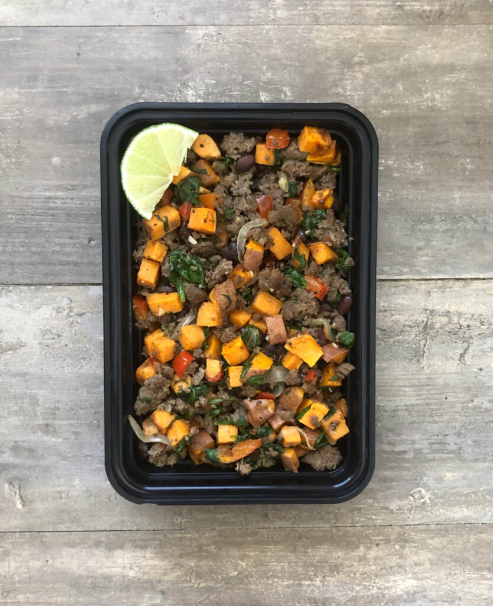

Garlic Lime Beef

Description
Ground beef flavored with garlic, lime juice and soy sauce mixed into a skillet type meal with sweet potatoes, black beans, onions, red peppers and spinach. Serve with a lime slice to drizzle over the top before eating for an added layer of freshness.
Ingredients (for 5 servings)
For the beef
- 2 lbs (908 g) ground beef (85/15)
- 3 Tbsp (45 g) lime juice
- 2 Tbsp (30 g) soy sauce
- 1 Tbsp (21 g) honey
- 1 Tbsp (15 g) minced garlic/li>
For the vegetables
- 1 medium (200 g) sweet onion
- 1 medium (150 g) red pepper
- 2 medium (750 g) sweet potatoes
- 4 Cups (100 g) spinach
- 1 can (439 g) black beans
- 1 Tbsp (15 g) oil
Instructions
For the vegetables
- Wash and cut your vegetables. Mince the garlic. Cut the sweet potato into a large dice (1/4" - 1/2" cubes). Cut the onion into slices and the red pepper into a small dice. Roughly chop the spinach into smaller pieces.
- I cook the sweet potatoes in the air fryer. If you don't have an air fryer you can use an oven but it will likely require the use of more oil to roast.
- Preheat your air fryer to 400℉ or your oven to 425℉. Add your sweet potatoes to the air fryer basket and spray with oil. Air fry for 10-15 minutes, shaking every couple of minutes to mix.
- If you use the oven, toss the potatoes in a bit of oil and spread on a sheet pan. Cook for 10 minutes and then flip and cook an additional 5-10 minutes.
For the beef
- In a large bowl, add in the lime juice, soy sauce, honey, and minced garlic. Mix to combine. It may help to microwave the honey for a bit to make it more viscous.
- Add in the beef and mix with the marinade until it has all been incorporated. Using your hands will be easiest.
- In a large skillet, cook the beef over medium high heat. Because we added a bunch of liquid to this the beef is going to release more liquid as normal. Because of this it won't brown up until that water has been boiled off. Allow that water to evaporate. It make take a bit longer to cook the beef than it normally does.
- Once the beef has cooked and all of the water has evaporated, you will be left with all of the fat that has been rendered off of the beef. We will use this to cook the vegetables. If you have more than 2 Tbsp of the fat in the pan, spoon the excess out so that you only have about 2 Tbsp of fat left in the pan.
- Push the meat to the outside of the pan and add the onions and peppers to the middle and cook until they have developed color and softened. Season lightly with salt.
- Once the onions and peppers have cooked, add in the spinach and allow it to wilt.
- Add the potatoes and drained black beans to the pan and mix to combine.
- Season with salt and pepper to taste.
- Wash and cut a lime into wedges to garnish each dish.
For serving
- This recipe makes 5 servings. Divide your ingredients evenly between your 5 containers.
Credits
Recipe content taken from Meal Prep Manual.